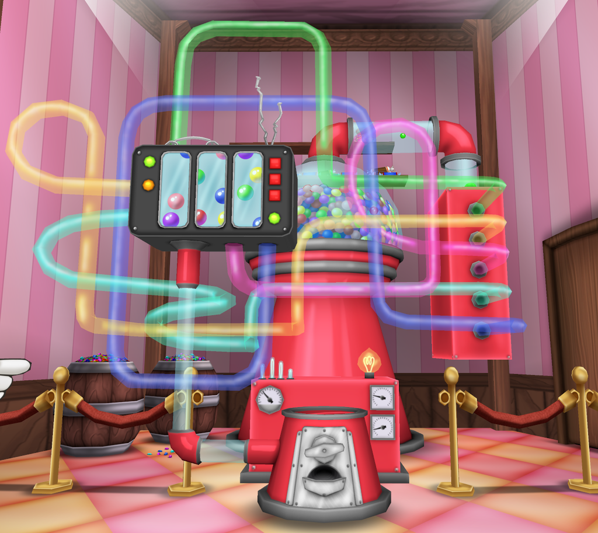
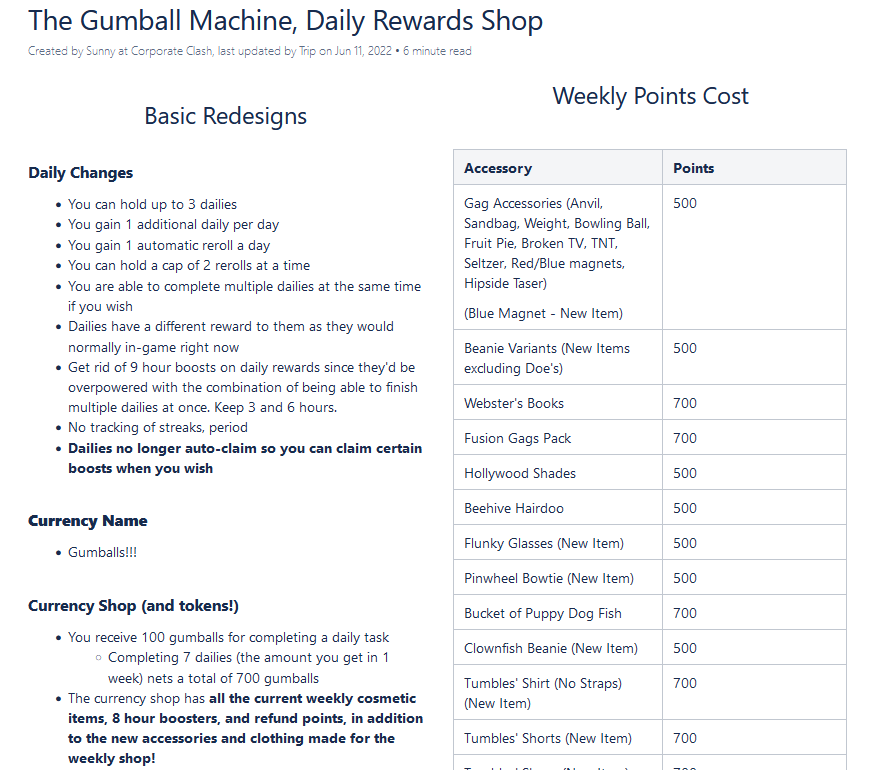

One of Corporate Clash's newly beloved features that got introduced with update v1.3 was the Gumball Machine, which allowed players to exchange a new currency called Gumballs earned from fighting bosses and doing activities around the game for rare and unique cosmetic items. The machine houses numerous prizes from boosters to aide gameplay, cosmetic clothing that's newer and from years past, profile poses and backgrounds, and tons of accessories to choose from. The concept of the machine was designed entirely by myself, but originally it was a stand with one of our characters, Lynn Decisive. Over time, the idea evolved into a sentient gumball machine that would be positioned inside of our in-game quest hubs.
The Gumball Machine in-game!
A snippet of the Game Design Document I worked on for the initial concept of the machine.